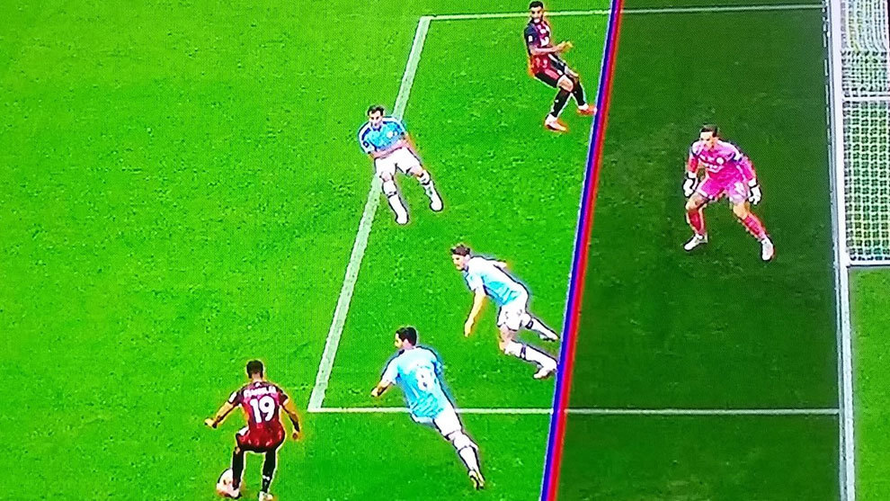

Fuera de juego
En fútbol, fuera de juego, offside, fuera de lugar, órsay (u orsai) o posición adelantada es una regla de carácter estratégico, introducida con la intención de ordenar el juego. Está recogida en el reglamento de juego como regla 11.
Según la FIFA, la regla actual, un jugador se encuentra en posición de fuera de juego si interviene en una jugada y se encuentra más cerca de la línea de meta opuesta que la pelota y el penúltimo adversario. Esto quiere decir que el balompedista se encuentra fuera de juego si antes de recibir el esférico está más cerca de la línea de meta que todos los jugadores oponentes, menos uno (quien suele ser el arquero). A pesar de esta simple explicación, la aplicación de la regla depende de otros factores de juego. No obstante, si el jugador se encuentra por detrás de la posición del balón, nunca estará en fuera de juego.
No hay fuera de juego: desde un saque de meta, un saque lateral o un saque de esquina, también si el jugador que recibe el balón se encuentra en su propia mitad del campo o está a la altura del último o los últimos dos adversarios, o si algún jugador del equipo contrario habilita al jugador, o sea, si el jugador que toca la pelota antes de que el jugador intervenga en la jugada no es del mismo equipo.
